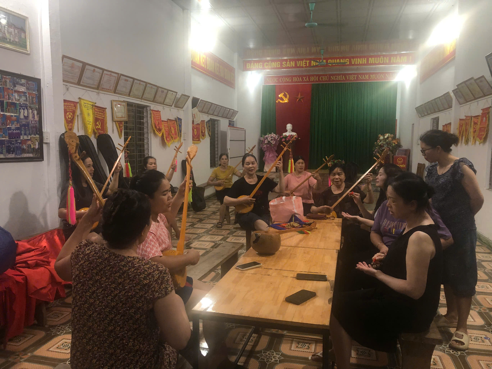
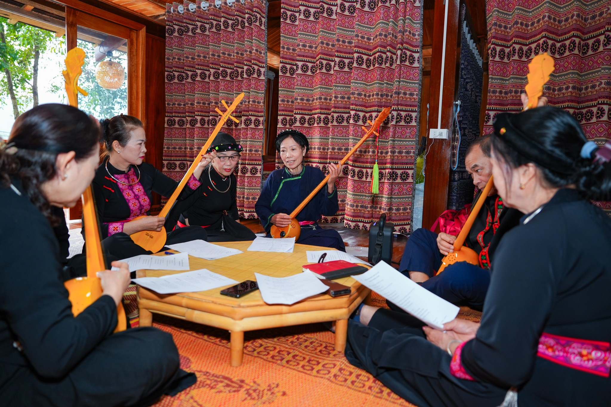
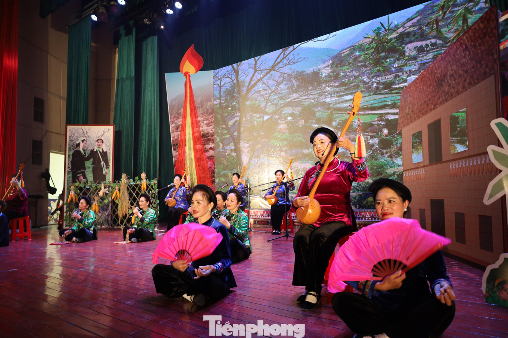
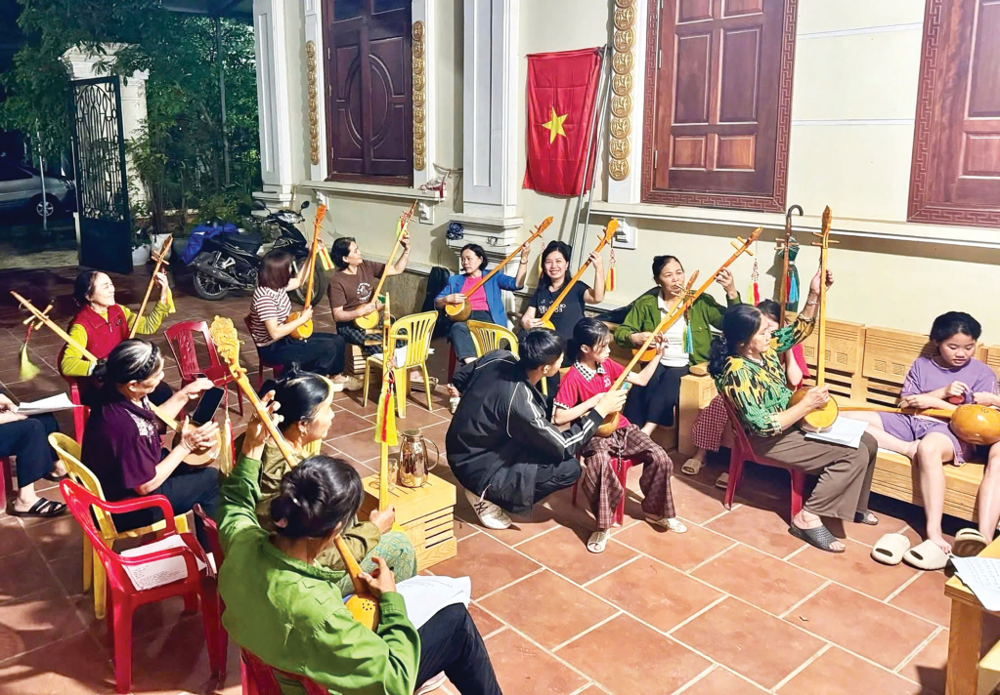
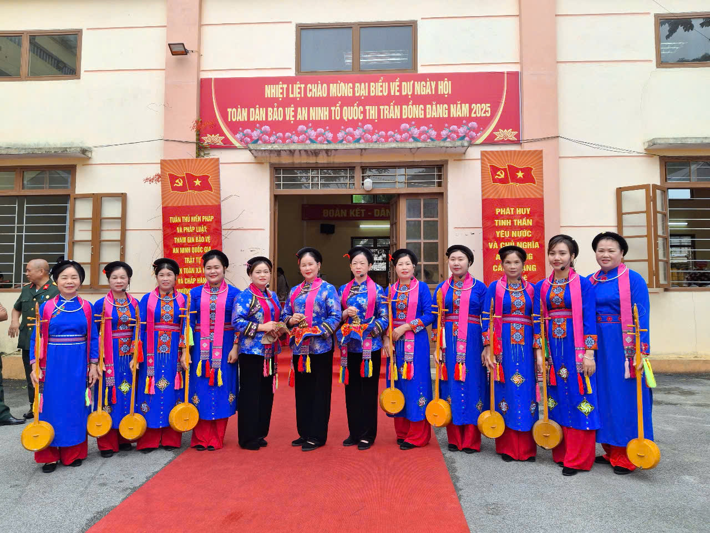
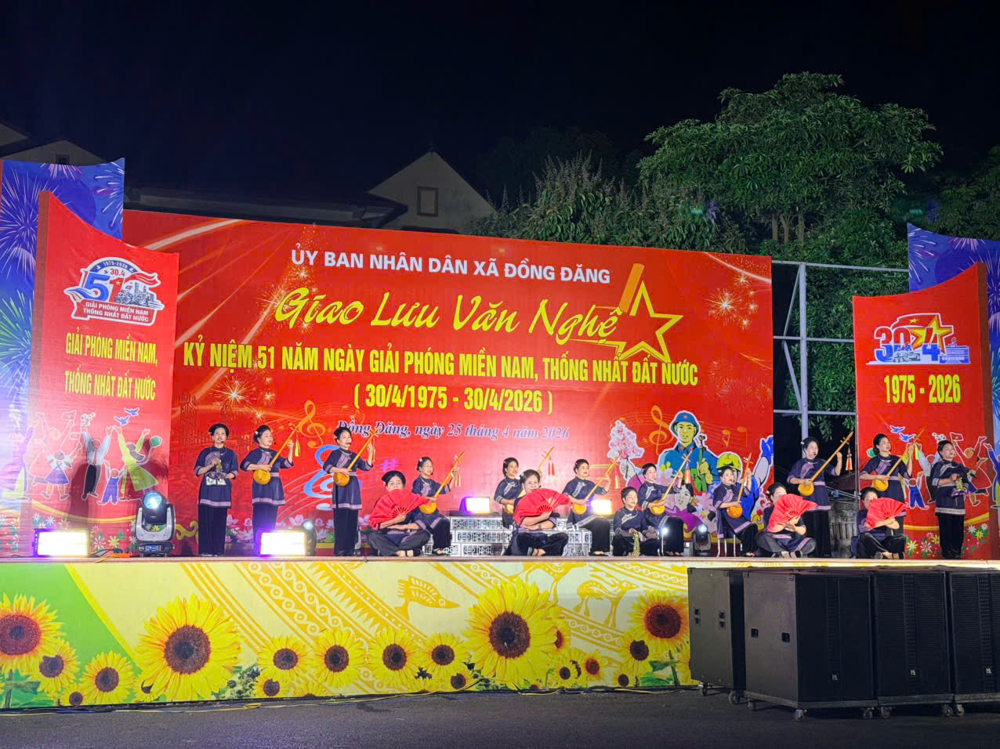

🏆 DI SẢN VĂN HÓA PHI VẬT THỂ ĐẠI DIỆN CỦA NHÂN LOẠI
Nghệ thuật Diễn xướng Dân gian Hát Then
"Loại hình nghệ thuật dân gian tổng hòa giữa âm điệu Đàn Tính, nhịp xóc đồng, múa truyền thống và kho tàng thơ ca trữ tình của đồng bào Tày, Nùng Xứ Lạng."
NGUỒN GỐC & DỒNG CHẢY LỊCH SỬ
Hành trình Bền bỉ của Dân ca Xứ Lạng
"Hát Then ra đời từ chính đời sống lao động, sinh hoạt văn hóa của người Tày, Nùng tỉnh Lạng Sơn. Qua nhiều thế hệ, Then trở thành món ăn tinh thần không thể thiếu, ghi lại kinh nghiệm sản xuất, tình yêu thiên nhiên và ước mơ về cuộc sống no ấm."
"Từ những câu hát giao duyên bên bếp lửa bản làng, Then Lạng Sơn đã bước lên các sân khấu nghệ thuật, phát triển thành các bài Then lời mới giàu sức sống hiện đại."
Khám phá các mốc lịch sử →
4 THÀNH TỐ NGHỆ THUẬT CỐT LÕI
Trụ cột Nghệ thuật Diễn xướng

NHẠC CỤ & GIAI ĐIỆU
Âm điệu Đàn Tính & Nhạc Xóc
Sự kết hợp giữa tiếng Đàn Tính trầm ấm, chùm xóc đồng rộn ràng cùng hệ thống làn điệu đặc trưng như Pây Tàng, Tàng Bốc, Khảm Hải.
Chi tiết →

VĂN HỌC DÂN GIANG
Thơ ca & Văn vần Tày – Nùng
Hệ thống thơ tự sự phong phú với ngôn từ giàu hình ảnh, phản ánh tri thức dân gian, đạo lý làm người và tình yêu quê hương biên cương.
Chi tiết →

NGHỆ THUẬT MÚA
Các Điệu Múa Truyền Thống
Những động tác múa phụ họa sinh động như múa quạt, múa dải lụa, múa chầu tạo nên sự hòa quyện nhịp nhàng giữa âm thanh và hình thể.
Chi tiết →

TRANG PHỤC TRUYỀN THỐNG
Áo Dài Chàm & Mụ Then
Sắc chàm nguyên bản trên bộ áo dài 5 thân cài cúc nách, kết hợp mũ Then thêu hoa văn tinh xảo và chiếc đàn Tính gọt từ quả bầu khô.
Chi tiết →
BẢO TỒN & PHÁT TRIỂN HIỆN ĐẠI
Công tác Bảo tồn tại Lạng Sơn

THẾ HỆ TRẺ
Đưa Hát Then - Đàn Tính vào Học đường
Chương trình ngoại khóa truyền dạy kỹ thuật gảy Đàn Tính và hát dân ca cho học sinh các cấp trên địa bàn tỉnh Lạng Sơn.

SINH HOẠT CỘNG ĐỒNG
Sức sống từ 65 Câu lạc bộ Dân ca
Mạng lưới câu lạc bộ sinh hoạt đều đặn tại 11 huyện thị – nơi nghệ nhân ưu tú trực tiếp truyền dạy làn điệu cổ cho hạt nhân văn nghệ.

HỘI DIỄN NGHỆ THUẬT
Sân khấu hóa & Giao lưu Quốc tế
Đưa các bài Then lời mới ca ngợi quê hương đất nước lên các sân khấu lớn, quảng bá hình ảnh di sản Lạng Sơn đến bạn bè trong và ngoài nước.